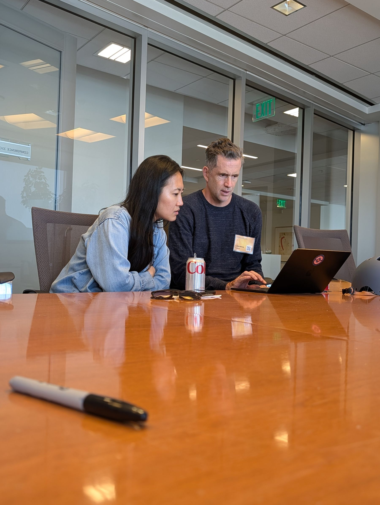

$0–2M
Annual revenue
Pre-seed & Seed
Find what customers value. Make the early hires. Turn signals into a repeatable approach.
For leadership teams of venture-backed companies
A peer membership for the leaders delivering your company’s growth plan. Each month, your VEN Partner focuses on your top two challenges and connects you with relevant experience to test assumptions, weigh tradeoffs and move the work forward.
Every new eligible leader gets their own trial, including your next colleague to join.

The membership, in practice
The capital has milestones attached. The team has choices to make before the next board meeting. Your Partner helps you reach people who understand the pressure and have experience you can put to use.
Less searching for the right room.
More of the right conversation.
Each month, bring your two most important challenges to your dedicated VEN Partner. Your role, company stage and priorities give the support its context.
Your Partner helps you find the people and conversations that fit, whether that means an introduction, a peer discussion or a relevant expert session.
Pressure-test your thinking, weigh the tradeoffs and decide what to do. You own the decisions. Your Partner keeps the conversations relevant as your priorities evolve.


Familiar territory. To someone.
Marketing, engineering, people, operations and every other leadership function own consequential decisions. Start with the challenge, whatever your title.
Win customers · Marketing, sales and customer leaders
Demand is coming in, but too few prospects become lasting customers.
Leaders who have worked through acquisition, sales handoffs or retention at a similar stage.
Identify the weakest handoff and choose one change to test before adding spend.
Illustrative situations across different roles and stages, not member results or a promise of a particular introduction.

Good company. For the company you’re building.
Someone at a similar stage gets the constraints. Someone with different experience may see an option you haven’t considered.
VEN brings those perspectives together around your role, stage and priorities. You bring your experience, too.
The thinking behind VENRight context. Better conversation.
The decisions change as your company grows. These stage bands help start the conversation about relevant peers.
Annual revenue
Pre-seed & Seed
Find what customers value. Make the early hires. Turn signals into a repeatable approach.
Annual revenue
Series A
Build a repeatable growth motion and the team that can deliver it.
Annual revenue
Series B & C
Scale leadership, operating systems and growth without losing focus.
Annual revenue
Series D+
Navigate new markets, product lines and a more complex organization.
Annual revenue bands are a guide. Funding rounds and revenue do not always line up. We discuss your actual context when assessing fit.
For you. For the leaders beside you.
Engineering is weighing delivery commitments. People is shaping the next layer of leadership. Marketing is deciding which market deserves the next investment.
Each member brings relevant perspective back to the choices they own, so more of the company’s plan benefits from experience beyond the team.
Explore membership for your teamExplore who could benefit, what participation involves and how to evaluate fit.
A practical brief to share with your teamFrom the FounderNexus community
This was a fast track to relevant experience/advice in a room where you hold nothing back.
A member’s experience with FounderNexus, the community behind VEN. Individual experiences vary.
A few things you might be wondering
Start with the basics. Bring the specifics to your fit conversation.
Let’s talk about fitNo. VEN is designed for leadership teams of venture-backed companies, including founders, CEOs and senior executives responsible for delivering the company’s growth plan. We discuss your role, stage and priorities to assess fit.
Each month, your Partner helps you focus on your top two challenges and identify relevant people, conversations and resources. That might mean a peer introduction, a discussion or an expert session. They help you find useful perspective; you remain responsible for your decisions and execution.
Your experience starts with your own role and priorities. Every eligible leader receives an individual trial, including colleagues who join after another team member. Tell us who is already participating when you explore membership.
Use the fit conversation to ask about the formats available for your priorities, time-zone fit, expected participation, pricing and trial terms. If colleagues may join too, discuss how their individual experiences would work.
You can explore membership for yourself or discuss participation for several colleagues. The fit conversation looks at each prospective member’s role and needs, rather than assuming one experience suits everyone.
Relevant experience can help you see alternatives, test assumptions and identify a practical next step. That is how VEN aims to support execution. It does not guarantee a business result.
Explore the illustrative Success EquationYour next move
Tell us about your role, your company and your top challenges. We’ll explore whether VEN is a useful fit.